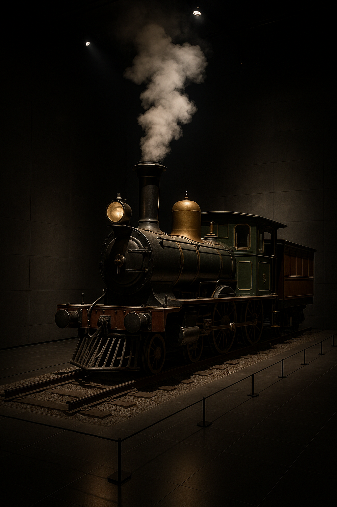

 Previously on Japanese History Blog… We watched the Edo period lock Japan’s doors, freeze its social classes and turn samurai into bureaucrats. Fires and famines rocked Edo’s wooden skyline, while merchants quietly funded an urban pop culture of kabuki, geisha and ukiyo‑e prints. Then came the black ships: Commodore Perry anchored in Tokyo Bay with steam and cannons, and Japan’s leaders realized their isolated paradise might become a colony. The Tokugawa shogunate collapsed like a house of tatami mats. In January 1868 a teenage emperor named Mutsuhito reclaimed power in the Meiji Restoration, and Japan sprinted toward modernity with all the grace and comedic awkwardness of a samurai in a top hat.
The overthrow of the Tokugawa was more of a coup than a bloody revolution, but it wasn’t entirely peaceful. The last shogun, Tokugawa Keiki, relinquished authority in 1867, yet samurai loyalists continued the fight. The resulting Boshin War left over 8,000 dead as government forces chased rebels north to Hokkaido. Despite this turmoil the new regime quickly sought to articulate its ideals. In April 1868 the young emperor issued a five‑point document known as the Charter Oath. It promised to create deliberative assemblies, unite all classes, allow people to pursue their own vocations, abolish archaic customs, and “seek knowledge throughout the world”. This succinct statement served as both a mission and a manifesto: Japan would modernize by learning from foreigners while forging a unified nation. The oath signalled that the Meiji era’s leaders understood that legitimacy in the eyes of both their own people and foreign powers required change.
One of the new government’s first tasks was to erase the han, the semi‑feudal domains that had divided the country for centuries. In 1871 the Meiji leaders replaced more than 200 domains with modern prefectures. Daimyō were summoned to Tokyo and asked—politely but with military pressure—to surrender their lands and people to the emperor. Most complied, often receiving peerage titles and government bonds in exchange. This radical centralization allowed for uniform taxation and law enforcement. At the same time, the government issued a land tax law that standardized payments in money rather than rice. To fund modernization, farmers shouldered the fiscal burden, facing cash taxes regardless of harvest yields. A conscription law (1872) abolished the samurai monopoly on the sword; every male was liable for military service. This “commoner army” angered traditionalists but created a national army that would soon prove its mettle. A universal education law mandated three years of schooling for boys and girls. New textbooks extolled filial piety alongside algebra, and classrooms replaced Confucian temples as centres of learning. Most controversial was the abolition of samurai stipends. The government gradually converted hereditary payments into government bonds, effectively ending the samurai class. For many former warriors, the reforms were an existential crisis: their status, income and distinctive topknot hairstyle were swept away. Some adapted by becoming teachers, police officers or entrepreneurs. Others fumed, none more so than Saigō Takamori, a hero of the Restoration who returned to Kagoshima to raise a school for disgruntled ex‑samurai. In 1877 he led the Satsuma Rebellion, a tragic last stand in which government conscripts fought their former idols. The civil war lasted eight months, cost millions of yen, injured 10,000, killed over 6,000 and drained the treasury. Saigō’s defeat ended large‑scale samurai resistance and confirmed the government’s authority.
With feudal obstacles removed, the Meiji leaders embraced modernization with dizzying enthusiasm. They sent the Iwakura Mission (1871–73) abroad to study Western institutions and renegotiate treaties. Hundreds of yatoi (hired foreigners) were recruited to design railways, teach engineering, create universities, and build factories. Within decades Japan boasted its first railroads, telegraph lines, modern postal service, brick buildings, banks, public schools and hospitals. Tokyo streets filled with rickshaws, new jobs like barber and milkman appeared, and men in bowler hats sipped beer while women tried European dresses. Meat eating, once taboo in Buddhist Japan, became fashionable; dairy farming thrived near the capital. The solar calendar replaced the lunar one. Public events celebrated electric lamps and horse‑drawn carriages. Newspapers and magazines circulated new ideas and gossip at unprecedented speed. Yet modernization had a dark side. To pay for railroads and factories the government leaned heavily on land taxes, squeezing farmers already facing volatile rice prices. When the Matsukata fiscal retrenchment of the early 1880s cut government spending, rice and silk prices collapsed; bankruptcies skyrocketed, and peasant uprisings shook the countryside. Factory workers—particularly young women in silk mills—endured long hours, harsh conditions and meagre pay. Many struck or fled, while newspapers published shocking reports of abuse. The government’s motto of “Fukoku Kyōhei” (“Rich country, strong army”) often translated into “rich nation, poor people.” Still, by the 1890s Japan had built a basic industrial base, and urban dwellers embraced novelties like department stores, public baths, safe drinking water, moving pictures, wristwatches, and beer halls.
Political modernization lagged behind economic change. Initially the Meiji government ruled by decree, reorganising ministries and revising policies whenever necessary. Popular movements demanding a national assembly gained momentum in the 1870s. Responding to pressure, elder statesman Itō Hirobumi studied European constitutional models and drafted the Meiji Constitution. Promulgated in 1889, it created a bicameral Diet with a House of Representatives and a House of Peers while reserving sovereignty for the emperor and giving the cabinet, not the elected house, control over the military. The constitution granted subjects limited civil rights but placed many limits, including the emperor’s power to issue emergency ordinances. The first elections (limited to male property owners) were held in 1890. While far from democratic, the constitution gave Japan the trappings of a modern nation‑state and impressed Western powers. The government also sought to revise the unequal treaties signed with the West in the 1850s. Extraterritoriality (foreigners tried in their own courts) was a constant humiliation. Years of negotiation paid off when Britain agreed to end extraterritoriality in 1894 and other powers soon followed. Tariff autonomy was restored in 1911, giving Japan more control over its economic policies.
As Japan industrialized, its leaders concluded that national survival required colonial expansion. In 1874 Japan sent troops to Taiwan to punish tribes that had killed shipwrecked Ryukyuans. In 1879 it annexed the Ryukyu Islands, and a year later traded territories with Russia to gain the Kuril Islands. But the watershed came in 1894, when Japan went to war with China. The First Sino‑Japanese War was swift; Japan’s modern conscript army and navy overwhelmed Qing forces, capturing Port Arthur and Weihaiwei. The resulting Treaty of Shimonoseki ceded Taiwan to Japan and granted indemnities. Ten years later, Japan stunned the world by defeating Russia in the Russo‑Japanese War (1904–1905), securing influence in Korea and Manchuria. These victories transformed Japan into an imperial power and inspired nationalist pride. They also entrenched the military’s role in politics, with the army and navy becoming central actors in national decision making. Nationalism was stoked through conscription, patriotic education and Shinto revival. Symbols like the national flag and the emperor’s portrait became objects of reverence. However, not all wars were popular: the government had to quell domestic opposition during the Russo‑Japanese War by co‑opting the media and promising future prosperity. The wars’ costs fueled inflation and tax hikes, exacerbating social tensions. But on the world stage, Japan’s victories signalled that an Asian nation could defeat a European empire, reshaping global geopolitics.
Between the Sino‑ and Russo‑Japanese Wars, a mass society emerged. Urban residents enjoyed newspapers, department stores, running water, movie theatres, and beer halls. Public spaces buzzed with political speeches and debates; women began to participate in civic movements, though they lacked voting rights. Literacy rates climbed; the postal system delivered letters to remote villages; and telegraph lines shrunk distances. At the same time, the rural majority faced heavy taxes, bad harvests and landlord exploitation. Peasants migrated to cities or to Hokkaido, where the government encouraged settlement to secure its northern frontier. The contrast between glittering Ginza shops and impoverished villages laid bare the unevenness of modernization.
The Meiji period (1868–1912) compressed centuries of change into a few decades. An isolated feudal state became a constitutional monarchy with railroads, telegraphs, factories and a modern army. The Charter Oath’s vow to seek knowledge globally led to missions abroad and the hiring of foreign experts. Abolishing domains and samurai stipends centralised power and unleashed both progress and rebellion. New laws on conscription and education created a citizen army and literate populace, but taxes and factory conditions placed enormous strain on commoners. Japan’s triumphs in war brought pride and prestige, yet also militarism and colonialism. The Meiji Constitution established modern institutions but limited democracy. In short, Japan leapt from kimonos to railroads—sometimes gracefully, often painfully. As we look ahead to the Taishō era, we’ll see how the nation’s first experiments with party politics, mass media and international diplomacy unfolded against the backdrop of World War I and a growing desire for democracy. The Meiji legacy of modernization and empire would both enable and haunt Japan’s twentieth century path.